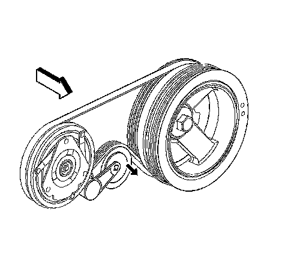

Drive Belt Replacement - Air Conditioning
Drive Belt Replacement - Air Conditioning
Removal Procedure

1. Remove the accessory drive belt.
2. Install a ratchet into the air conditioning (A/C) belt tensioner adapter opening.
3. Rotate the A/C belt tensioner clockwise in order to relieve tension on the A/C belt.
4. Remove the A/C belt from the pulleys.
5. Slowly release the tension on the A/C belt tensioner.
6. Remove the ratchet from the A/C belt tensioner.
7. Clean and inspect the belt surfaces of all the pulleys.
Installation Procedure
1. Install the A/C belt over the crankshaft balancer.
2. Install a ratchet into the A/C drive belt tensioner adapter opening
3. Rotate the A/C belt tensioner clockwise in order to relieve tension on the belt tensioner.
4. Install the A/C belt over the tensioner pulley.
5. Install the A/C belt around the A/C compressor pulley.
6. Slowly release the tension on the A/C belt tensioner.
7. Remove the ratchet from the A/C belt tensioner.
8. Inspect the A/C belt for proper installation and alignment.
9. Install the accessory drive belt.